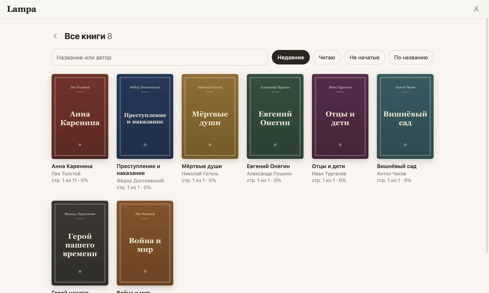
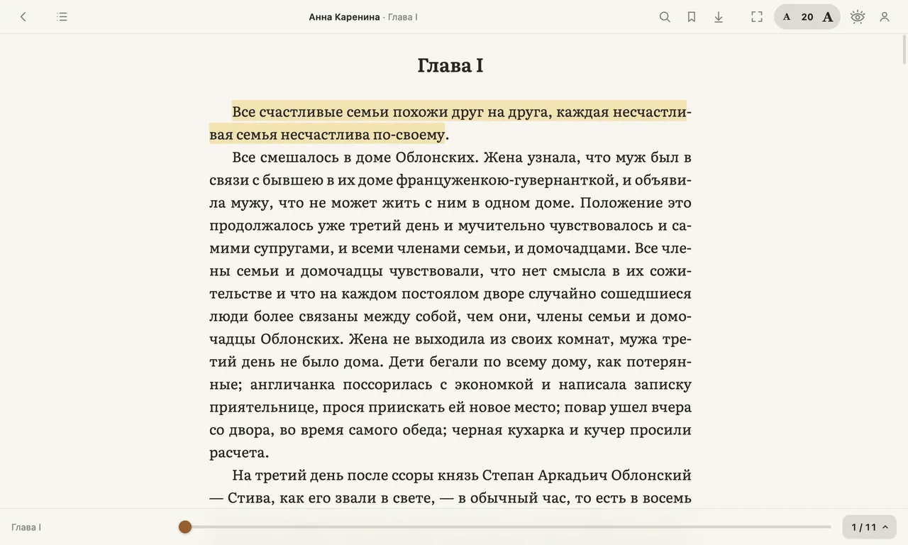
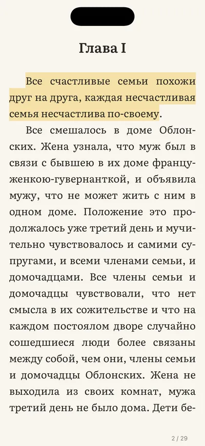
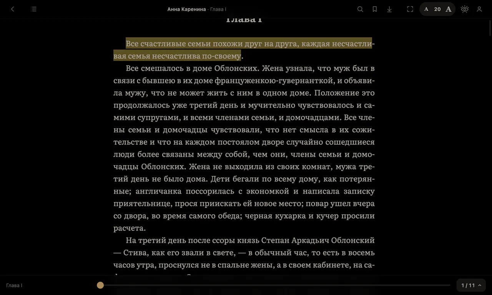
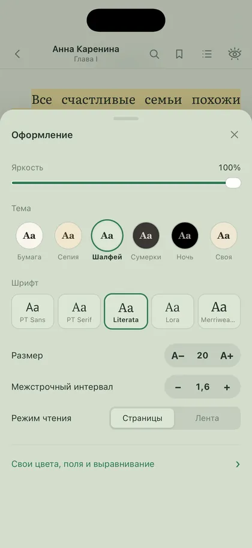
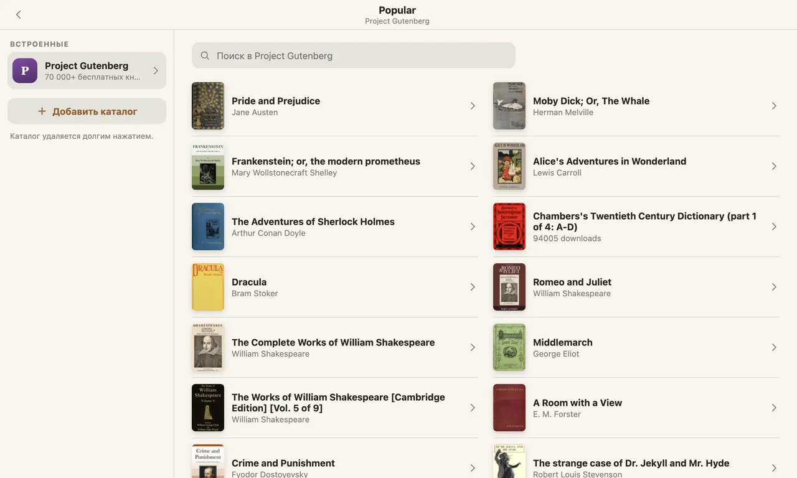
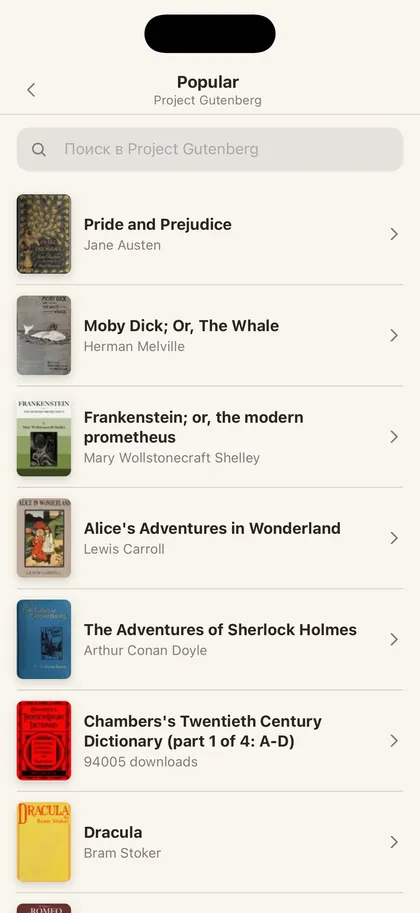

Спокойная читалка
для ваших книг
FB2, EPUB и TXT на iPhone, iPad, Mac, Windows и Linux. Место, заметки и списки сами переносятся между устройствами.
Читалка, которая не мешает читать
- Бесплатно
- Без рекламы
- Без аккаунта
- iPhone · iPad · Mac · Windows · Linux







Всё для долгого чтения, ничего лишнего
FB2 и EPUB без конвертации
Открывает книги как есть, вместе с обложками и сносками. ZIP с FB2 тоже.
Место, заметки и списки — везде
Дочитали на телефоне, продолжили на планшете или компьютере с той же страницы.
Закраски и заметки
Четыре цвета, заметки к фрагментам, переход по сноскам и обратно одним касанием.
Словарь и перевод
Значение слова или перевод фразы прямо в книге. На iPhone перевод без интернета.
Каталоги OPDS
Project Gutenberg и ваша библиотека Calibre — листайте и скачивайте прямо в приложении.
«Прочитано» и «Хочу прочитать»
Оценки, обложки и порядок — маленький Goodreads внутри читалки.
Пять тем — на день, вечер и ночь
Контраст от 8:1 до 14:1, без режущего белого. Шрифты Literata, PT Serif и ещё три.
Всё смешалось в доме Облонских.
БумагаВсё смешалось в доме Облонских.
СепияВсё смешалось в доме Облонских.
ШалфейВсё смешалось в доме Облонских.
СумеркиВсё смешалось в доме Облонских.
НочьБесплатно на всех устройствах
Частые вопросы
Это правда бесплатно?
Да. Чтение, заметки, списки и синхронизация бесплатны. Позже появится подписка с большим облаком для книг, но всё, что есть сейчас, останется бесплатным.
Нужен ли аккаунт?
Нет. Без входа всё хранится на устройстве. Аккаунт нужен только для синхронизации между устройствами.
Где хранятся мои книги?
На вашем устройстве. Если вы вошли, файлы книг ещё и в закрытом облаке в ЕС — чтобы открыть книгу на другом устройстве.
Какие форматы?
FB2, FB2.ZIP, EPUB и TXT. PDF пока нет.